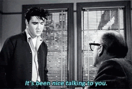

Talk to Someone:
Find someone to talk to. Whether that's a family member ir your pet, ranting and verbalizing the thoughts running rampant inside your head is a good way of helping to relieve stress. If you don't feel comfortable talking to anyone about what's stressing you, then a good cry may be in order. It seems counter-intuitive, but it does wonders. It's a way of letting out everything wihtout having to share. It's only temporary though, so it's important to remind you that you should always find someone you can talk to.
